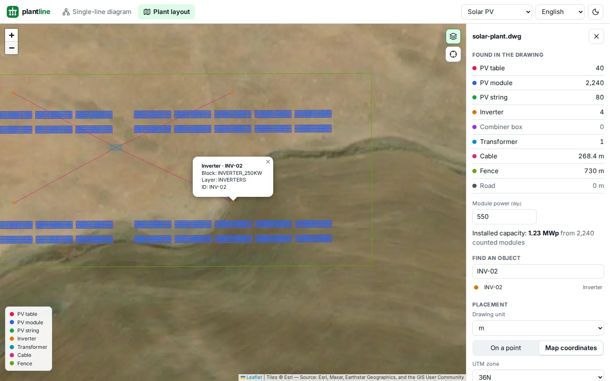
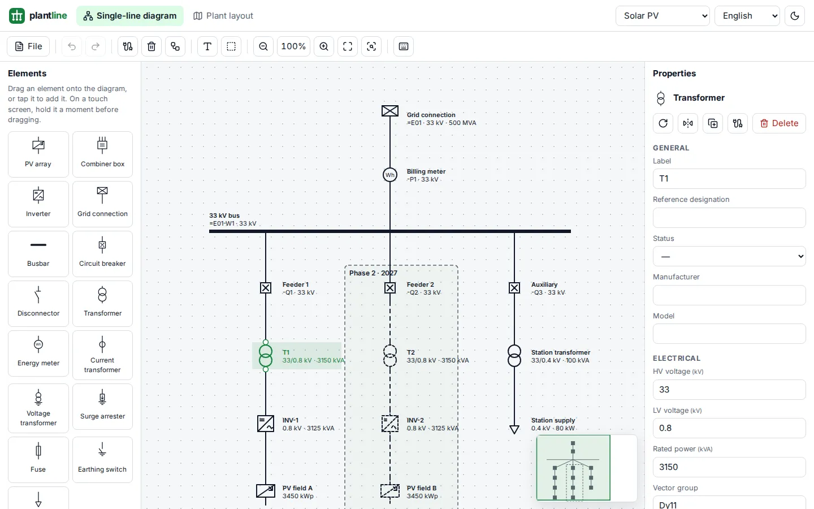
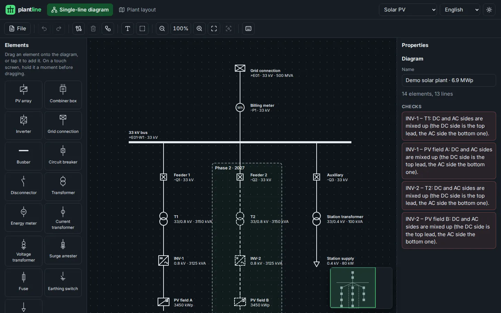
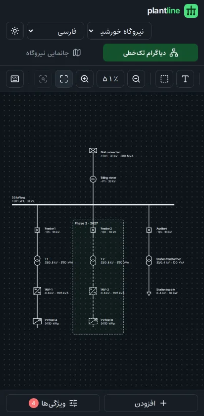

Web app · Energy engineering
plantline
Single-line diagrams and DWG/DXF plant layouts, in the browser.
A free tool for the people who design, build and run power plants. Draw the plant's single-line diagram, open its AutoCAD drawing and see the plant on the map with its tables, inverters, turbines, towers and cables found and counted. No account and no server: drawings are read in the browser and never leave it.
- A real diagram editor. 23 IEC 60617 symbols, drag and drop, connection points, shaped line routes, group editing, properties for every kind of equipment and design checks.
- AutoCAD in the browser. DWG and DXF read by a .NET reader compiled ahead of time to WebAssembly: a 7.5 MB plant with 27,000 block copies opens in about 3.5 seconds.
- On the map. In the drawing's own coordinates (UTM or any proj4 system) or by a click; objects counted, lengths measured and capacity worked out from the modules.
- For everyone. 14 languages with Arabic and Persian right to left, light and dark themes, phones and tablets, and no tracking.
- Measured in CI. Unit, reader and end-to-end tests on desktop and phone, with limits on reading time, memory and download size.
- React 19
- TypeScript
- .NET 10 → WebAssembly
- ACadSharp
- Leaflet
- proj4
- Vite
- Vitest
- Playwright



